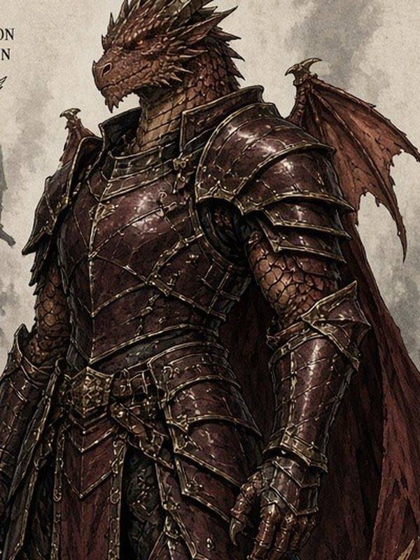
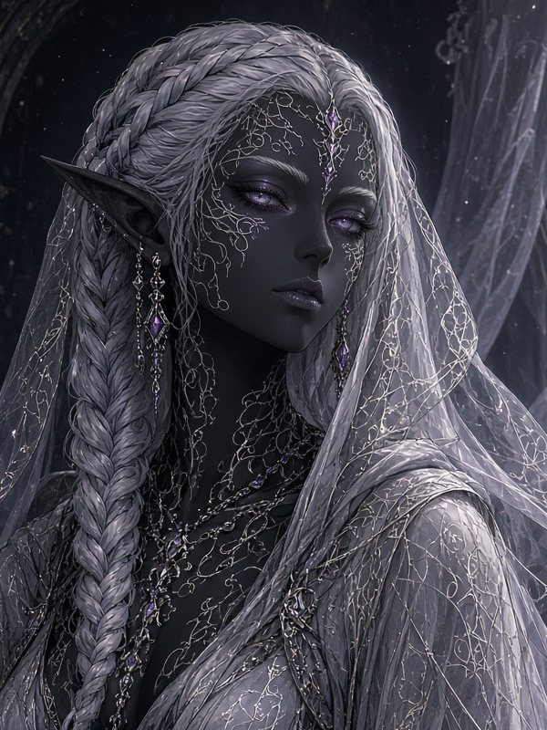
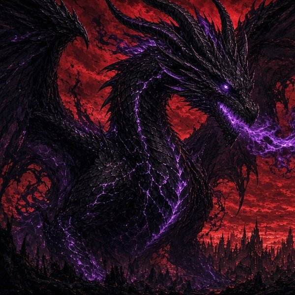
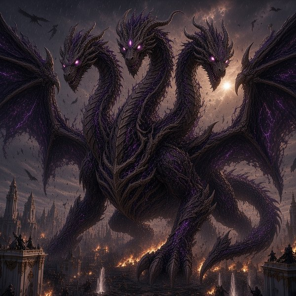
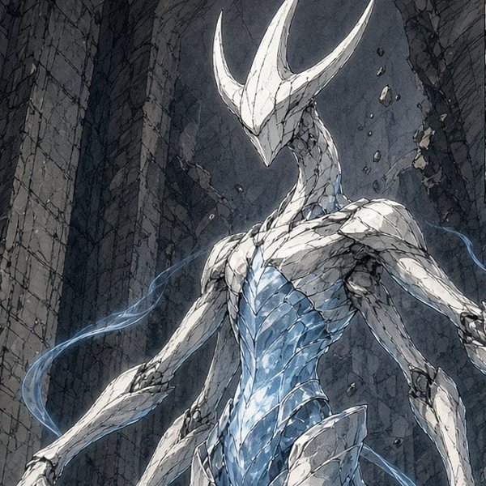
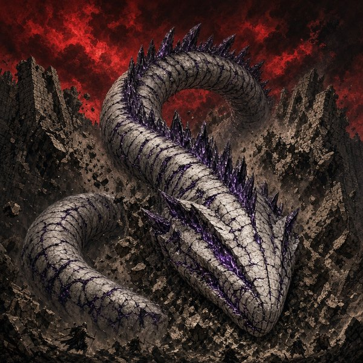
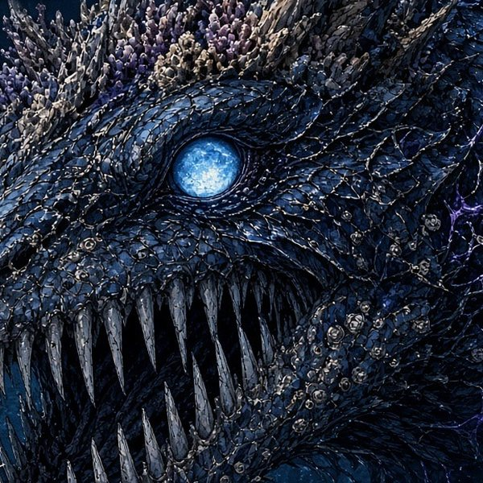
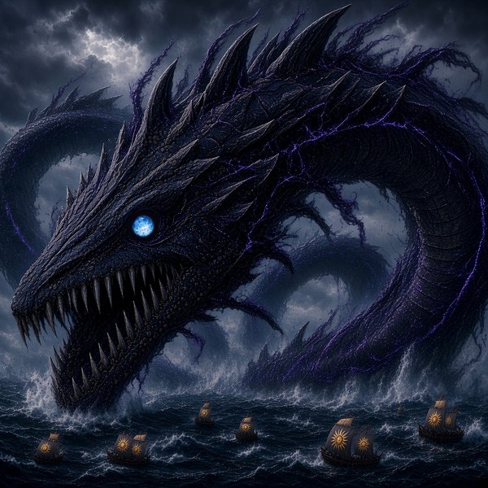
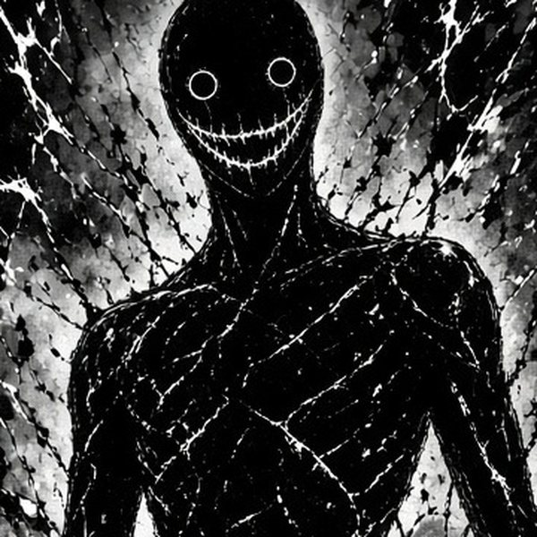
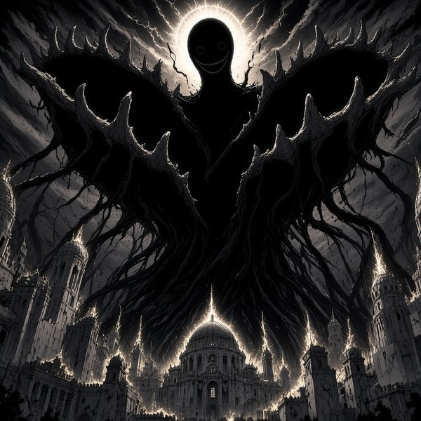

General Valgrimm
Pillar of the front line
A great dragon-born who leads the Demon Lord's front line against the Celestine Empire.
Saved on this device only. Use ← and → to turn chapters.
Demon Lord's Apostle
The powers that stand between the demon lands and everything that would end them.
“His Majesty's four strongest, beneath only himself. Each one commands a part of the army.”Bris Hollowpot, Chapter 3

Pillar of the front line
A great dragon-born who leads the Demon Lord's front line against the Celestine Empire.

Pillar of intelligence
An elder dark-elf sorceress who commands the Demon Lord's spies.
The third Pillar
Keeps to the shadows. Hardly ever seen in the castle.
The fourth Pillar
Keeps to the shadows. Hardly ever seen in the castle.
From later volumes. These guardians rise after Volume 1. Only their names, titles and art are shown here, with no story details. Each card also hides a sneak peek of its sworn form.


The Ashen Sovereign
Guardian of the skies
Sneak peek: the form Kokuenryū takes when he descends on the capital. A glimpse of what is coming.


Of the Lithborn
Guardian of the deep earth
Sneak peek: how Lithmaur looks after swearing to serve Mephesto, remade by his dark-matter power. A glimpse of what is coming.


The Drowned Crown
Guardian of the sea
Sneak peek: how Watatsumi looks after swearing to serve Mephesto, remade by his dark-matter power. A glimpse of what is coming.


Nisshoku, the Eclipse Maw
Guardian of the void
Sneak peek: how X looks after swearing to serve Mephesto, remade by his dark-matter power. A glimpse of what is coming.